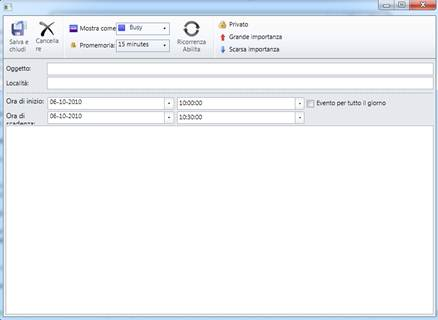

Table 6: Appointment window
|
Names in Resource File |
Values |
|
AppWindowSave |
Save and Close |
|
AppWindowDelete |
Delete |
|
AppWindowShowAs |
Show As |
|
AppWindowReminder |
Reminder |
|
AppWindowEnableRecurrence |
Enable Recurrence |
|
AppWindowRemoveRecurrence |
Remove Recurrence |
|
AppWindowPrivate |
Private |
|
AppWindowHighImportance |
High Importance |
|
AppWindowLowImportance |
Low Importance |
|
AppWindowSubject |
Subject |
|
AppWindowLocation |
Location |
|
AppWindowStartTime |
StartTime |
|
AppWindowEndTime |
EndTime |
|
AppWindowAllDay |
All day event |
|
RecurrencePattern |
Recurrence Pattern |
|
RecurrenceDaily |
Daily |
|
RecurrenceWeekly |
Weekly |
|
RecurrenceMonthly |
Monthly |
|
RecurrenceYearly |
Yearly |
|
RecurrenceRange |
Range of recurrence |
|
RecurrenceStart |
Start |
|
RecurrenceNoEndDate |
No End Date |
|
RecurrenceEndAfter |
End after |
|
RecurrenceEndBy |
End by |
|
RecurrenceOccurences |
Occurrences |
|
RecurrenceEvery |
Every |
|
RecurrenceDays |
Day(s) |
|
RecurrenceEveryWeekday |
Every Weekday |
|
RecurrenceRecurEvery |
Recur every |
|
RecurrenceWeeksOn |
Week(s)on |
|
RecurrenceSunday |
Sunday |
|
RecurrenceMonday |
Monday |
|
RecurrenceTuesday |
Tuesday |
|
RecurrenceWednesday |
Wednesday |
|
RecurrenceThursday |
Thursday |
|
RecurrenceFriday |
Friday |
|
RecurrenceSaturday |
Saturday |
|
RecurrenceDay |
Day |
|
RecurrenceOfEvery |
Of every |
|
RecurrenceMonths |
Month(s) |
|
RecurrenceThe |
The |
|
RecurrenceOn |
On |
|
RecurrenceOnThe |
On the |
|
RecurrenceOf |
Of |
|
RecurrenceYears |
Year(s) |

Figure 32: Appointment Window